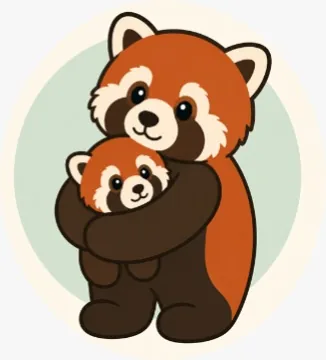

Waldkätzchen
Wenn es knirscht, schauen wir gemeinsam hin. Ich begleite Familien, Kinder, Jugendliche und Systeme bei herausfordernden Dynamiken – klar, zugewandt und alltagstauglich.
Nicht glätten. Nicht beschönigen.
Sondern verstehen, halten und verändern.

Waldkätzchen
Wenn es knirscht, schauen wir gemeinsam hin. Ich begleite Familien, Kinder, Jugendliche und Systeme bei herausfordernden Dynamiken – klar, zugewandt und alltagstauglich.
Nicht glätten. Nicht beschönigen.
Sondern verstehen, halten und verändern.


Kommt dir das bekannt vor?
Wenn du dich in einem dieser Sätze wiederfindest, bist du hier richtig.


Vielleicht klingt einer davon
wie euer letzter Dienstag.
„Es war nur ein Pullover. Der falsche. Zwanzig Minuten später weinen alle – und keiner weiß mehr, warum.“
„In der Schule ist alles unauffällig. Zu Hause bricht ab vierzehn Uhr die Welt zusammen.“
„Ich habe alles versucht: streng, verständnisvoll, konsequent, geduldig. Nichts davon hält länger als drei Tage.“
„Wir funktionieren. Aber wir kommen einander nicht mehr nahe.“
„Ich weiß nicht mehr, ob ich zu viel verlange – oder zu wenig.“
Solche Sätze sind kein Versagen. Sie sind der Anfang eines Gesprächs.
Wild und verbunden.
Ein Kind muss nicht angepasst sein,
um verbunden zu sein.
Wild sein heißt lebendig, intensiv, eigenwillig, laut, schnell, empfindsam. Verbunden sein heißt gesehen werden, sicher sein, nicht aufgegeben werden.
Auch in Konflikten kann Beziehung bestehen bleiben. Genau daran arbeiten wir.


Herausfordernde Dynamiken verstehen
Ich begleite nicht nur bei großen Krisen. Auch das, was von außen banal wirkt, kann für Familien hochbelastend sein: Wutausbrüche, Rückzug, Eskalationen, Überforderung, Übergänge, Schule, Geschwisterdynamiken, Missverständnisse im Alltag. Genau dort setze ich an.
Es darf knirschen – wir müssen nur lernen, anders hinzuschauen.
Wie ich arbeite →


Jugendliche
Kita




Beteiligte
Ich arbeite mit allen Beteiligten, die es braucht – nicht nur mit der Person, die gerade am lautesten auffällt.
Aus zwei Welten – für eine gemeinsame Perspektive.
Ich komme aus zwei Welten: aus der Heilpädagogik und aus vielen Jahren in der IT. Dazu kommt meine persönliche Familienerfahrung. Diese Mischung macht meinen Blick besonders: analytisch, systemisch, menschlich und alltagsnah.
Ich denke in Beziehungen, Mustern und konkreten Handlungsschritten – nicht in schnellen Schuldzuweisungen.
Meine Geschichte →

Das Kind ist nicht das Problem.
Das Verhalten ist ein Hinweis. Der Kontext gehört immer mit ins Bild.
Kein Kind ist absichtlich schwierig. Es hat Gründe – auch wenn wir sie noch nicht kennen.
Wer verstanden wird, muss sich nicht mehr wehren.
Grenzen und Wärme sind kein Widerspruch. Sie brauchen einander.
Veränderung beginnt nicht beim Kind. Sie beginnt beim Hinschauen.
Angebote im Überblick
Vier Wege, je nachdem, wer gerade Unterstützung braucht.

Nicht nur das Tier. Auch der Wald.
Waldkätzchen arbeitet mit einer Bildwelt aus drei Ebenen. Sie macht komplizierte Situationen besprechbar, ohne jemanden festzulegen.


So arbeiten wir zusammen
Du musst nicht wissen, wo du anfangen sollst. Das finden wir gemeinsam heraus.

Ihr müsst den nächsten Schritt
nicht schon kennen.
Ich bin da, wenn ihr bereit seid – mit Verständnis, Erfahrung und einem sicheren Rahmen.